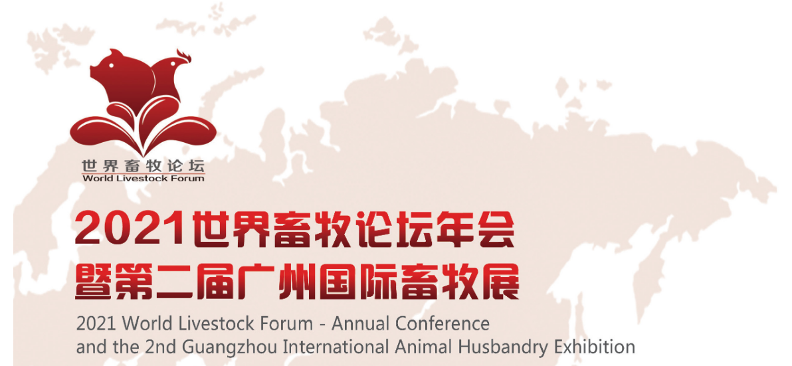

论坛：2021年9月8-9日 展览：2021年9月9-10日
地点：广州.琶洲保利世贸博览馆
联系：13751703216（微信同步）
ejX2021第二届广州国际畜牧展
一、 联合主办ejX2021第二届广州国际畜牧展
华南农业大学ejX2021第二届广州国际畜牧展
广东省畜牧兽医学会ejX2021第二届广州国际畜牧展
广东省养猪行业协会ejX2021第二届广州国际畜牧展
广东省家禽业协会ejX2021第二届广州国际畜牧展
广州奥盛农业服务有限公司ejX2021第二届广州国际畜牧展
二、 特色与专属ejX2021第二届广州国际畜牧展
1、独一无二的地缘优势ejX2021第二届广州国际畜牧展
珠三角接壤港澳台的大湾区，紧邻东南亚;既能最快的接触吸收最新的畜牧资讯和技术，也是畜牧业进出口的最便捷通道和市场;展会期间将特别邀请粤港澳及东南亚畜牧业进行集中展示交流。ejX2021第二届广州国际畜牧展
2、全面的国际合作ejX2021第二届广州国际畜牧展
与亚欧非多个国家和地区的数十个专业组织达成合作，邀请外国驻穗总领事馆农业商务处等，搭建起广州-海外畜牧展览会直通车。ejX2021第二届广州国际畜牧展
3、畜牧业新的盈利点ejX2021第二届广州国际畜牧展
种苗繁育、智慧养殖、动物营养与福利、屠宰/检疫/深加工的全产业链畜牧企业是下一阶段行业发展的新看点，展会上独立规划的动物营养与福利展区、屠宰检疫生加工展区，为行业创新做好了充分的准备。ejX2021第二届广州国际畜牧展
4、丰富多样的宣传ejX2021第二届广州国际畜牧展
展会与国内所有知名行业媒体进行全方位多样性的合作，率先在网络、微信、直播等线上平台上建立宣传体系，无偿为参展企业建立网络展会和手机展会，使广州国际畜牧展览会真正成为365天不间断的展示平台。ejX2021第二届广州国际畜牧展
5、高质量的专业买家群ejX2021第二届广州国际畜牧展
与专业机构合作，针对国内外及港澳台和东南亚地区的专业畜牧企业、供应商和进出口企业等专业买家进行一对一邀请，确保专业买家的数量和质量。ejX2021第二届广州国际畜牧展
6、高端国际化论坛ejX2021第二届广州国际畜牧展
展会同期举办国际性论坛，邀请国际权威专家和国内外知名畜牧企业技术人员，就非洲猪瘟、家禽疾病、动物营养与动物福利、智慧养殖、畜牧机械、屠宰加工等举办数场平行论坛，进行专业技术与创新应用交流活动。ejX2021第二届广州国际畜牧展
三、 回顾2020ejX2021第二届广州国际畜牧展
1、世界畜牧论坛系列活动回顾ejX2021第二届广州国际畜牧展
2020年12月4-6日，由广西畜牧兽医学会和广东省畜牧兽医学会主办，由广州奥盛展览顾问有限公司策划承办的"2020两广畜牧兽医高峰论坛"(简称两广论坛)在南宁五象山庄隆重举行。本次大会以"合作创新、防非替抗、生物安全、公共卫生"为主题，围绕两广猪业合作与创新发展进行交流。ejX2021第二届广州国际畜牧展
(1)2020两广畜牧兽医高峰论坛成功召开ejX2021第二届广州国际畜牧展
两广论坛作为“2021世界畜牧论坛”的系列活动之一，将邀请国内顶尖院士及两广行业专家，在防非和减抗的背景下，就猪业养殖技术创新与转型升级进行交流，以期更好地促进两省区猪业合作和行业持续健康发展。来自中国农业大学、华南农业大学、华中农业大学、湖南农业大学、广西大学、广东省农业科学院、江西省农业科学院等国内知名的大学和研究院所以及动物营养、疫苗研发、繁殖育种、养殖粪污有机利用企业的专业技术人员共500余人现场出席了本次论坛。ejX2021第二届广州国际畜牧展
(2)会议成果ejX2021第二届广州国际畜牧展
本次论坛采用现场和线上报告相结合并采取网络视频直播的方式进行，在当前新冠肺炎防控形势下虽然组委会对现场参会人数做了限制，但线上参与人员依然达3.6万人次。会后参会嘉宾及代表都对本次会议的举办给予了高度评价，认为会议组织有序，学术交流与疫情防控并重，与会专家的报告聚焦了在当前新冠肺炎和非洲猪瘟流行的大背景下，合作创新、防非替抗、生物安全、公共卫生的密切关系，会议成果必将进一步促进两广跨学科交流合作和推进畜牧业融合健康发展，在两广和华南地区乃至全国产生了巨大的影响。ejX2021第二届广州国际畜牧展
(3)战略合作单位ejX2021第二届广州国际畜牧展
北京华信农威生物科技有限公司ejX2021第二届广州国际畜牧展
广西悦牧生物科技有限公司ejX2021第二届广州国际畜牧展
哈尔滨维科生物技术有限公司ejX2021第二届广州国际畜牧展
广州市华南农大生物药品有限公司ejX2021第二届广州国际畜牧展
广东旺大集团股份有限公司ejX2021第二届广州国际畜牧展
广西扬翔股份有限责任公司ejX2021第二届广州国际畜牧展
德康农牧食品集团股份有限公司ejX2021第二届广州国际畜牧展
杭州佑本动物疫苗有限公司ejX2021第二届广州国际畜牧展
金河生物科技股份有限公司ejX2021第二届广州国际畜牧展
山东海能生物工程有限公司ejX2021第二届广州国际畜牧展
宁波三生生物科技有限公司ejX2021第二届广州国际畜牧展
广东海大畜牧兽医研究院有限公司ejX2021第二届广州国际畜牧展
南宁神九生物制品有限责任公司ejX2021第二届广州国际畜牧展
广西雄桂种猪有限公司ejX2021第二届广州国际畜牧展
天康生物制药有限公司ejX2021第二届广州国际畜牧展
广东永顺生物制药股份有限公司ejX2021第二届广州国际畜牧展
广州三行生物科技有限公司ejX2021第二届广州国际畜牧展
广西商大科技股份有限公司ejX2021第二届广州国际畜牧展
南宁精菲生态农业有限公司ejX2021第二届广州国际畜牧展
南宁莱佛斯托生物科技有限公司ejX2021第二届广州国际畜牧展
粤泰环保科技(广东)有限公司ejX2021第二届广州国际畜牧展
武汉科前生物股份有限公司ejX2021第二届广州国际畜牧展
播恩集团股份有限公司ejX2021第二届广州国际畜牧展
河北诚铸机械集团有限公司ejX2021第二届广州国际畜牧展
成都小巨人畜牧设备有限公司ejX2021第二届广州国际畜牧展
佛山市正典生物技术有限公司ejX2021第二届广州国际畜牧展
2、成功谱写行业新篇章---2020畜牧展回顾ejX2021第二届广州国际畜牧展
经历新冠疫情风雨，202广州国际畜牧展览会顺利成功于2020年8月20-22日高调亮相广州.琶洲。依托大湾区乃至华南畜牧业集群优势，打造辐射东南亚以及亚欧非平台，分享中国畜牧产业结构升级巨大商机，广东省畜牧兽医学会、广东省家禽业协会和广州奥盛展览顾问有限公司真诚与行业盛景共舞。ejX2021第二届广州国际畜牧展
四、 聚焦中国畜牧大市场ejX2021第二届广州国际畜牧展
1、珠三角，改革先驱之地;华南畜牧业，行业动力之源ejX2021第二届广州国际畜牧展
一直以来，珠三角畜牧业产业链完整、规模庞大、集中度高而闻名遐迩。然而今天，按照国家产业结构转型的思路，遵循行业发展由低端到高端的规律，大湾区畜牧业正处于战略升级的大时代的核心阶段。完整的产业集群、强大的消费能力都为畜牧业链条上的各个领域带来的巨大商机。ejX2021第二届广州国际畜牧展
2、认识决定方向;态度决定态度ejX2021第二届广州国际畜牧展
在面对行业整体水平加速提高，企业品牌化战略持续深入，消费需求更高端且多元化等现状中，畜牧业正在开启着向更高、更快、更强迈进的模式。ejX2021第二届广州国际畜牧展
我们的终端，需要更多的国际化、高端化的元素;ejX2021第二届广州国际畜牧展
我们的供应商，并不满足简单的自给自足;ejX2021第二届广州国际畜牧展
我们的市场，更适宜开放、活跃的品牌来竞争和参与。ejX2021第二届广州国际畜牧展
五、 2021世界畜牧论坛年会ejX2021第二届广州国际畜牧展
(一)开幕仪式/主题报告ejX2021第二届广州国际畜牧展
(二)生物安全科技创新大会ejX2021第二届广州国际畜牧展
(三)分论坛ejX2021第二届广州国际畜牧展
1)猪病专场ejX2021第二届广州国际畜牧展
2)禽病专场ejX2021第二届广州国际畜牧展
3)畜禽种苗繁殖育种专场ejX2021第二届广州国际畜牧展
4)营养与福利专场ejX2021第二届广州国际畜牧展
5)替抗专场ejX2021第二届广州国际畜牧展
6)生物安全ejX2021第二届广州国际畜牧展
7)屠宰与生深加工专场ejX2021第二届广州国际畜牧展
8)智慧养殖专场ejX2021第二届广州国际畜牧展
9)环保处理技术创新应用专场ejX2021第二届广州国际畜牧展
10)畜禽粪污资源化利用专场ejX2021第二届广州国际畜牧展
11)畜牧机械创新应用专场ejX2021第二届广州国际畜牧展
六、 展览范围：ejX2021第二届广州国际畜牧展
ejX2021第二届广州国际畜牧展
饲料/动保;育种和孵化;畜牧屋舍及养殖设备;屠宰、加工及处理/运输/冷藏/包装;优质品牌畜禽产品;粪污处理设备及生物质能源;实验/检测设备与服务;软件及自动化系统。ejX2021第二届广州国际畜牧展
七、 展位价格 ejX2021第二届广州国际畜牧展
|
展位类型ejX2021第二届广州国际畜牧展
|
价格（人民币）ejX2021第二届广州国际畜牧展
|
配置ejX2021第二届广州国际畜牧展
|
|
标准展位ejX2021第二届广州国际畜牧展
|
￥8800元/9㎡ejX2021第二届广州国际畜牧展
|
围板、楣板、1张咨询台、2把椅子、500W/220V电源插座、2个射灯、地毯、纸篓。ejX2021第二届广州国际畜牧展
|
|
展览光地ejX2021第二届广州国际畜牧展
|
￥900元/㎡ejX2021第二届广州国际畜牧展
|
无任何配置（自行搭建、缴纳管理费及电费），36m2起租。ejX2021第二届广州国际畜牧展
|
八、 联系人ejX2021第二届广州国际畜牧展
马大伟： 13751703216（微信同步） ejX2021第二届广州国际畜牧展
ejX2021第二届广州国际畜牧展
ejX2021第二届广州国际畜牧展 |